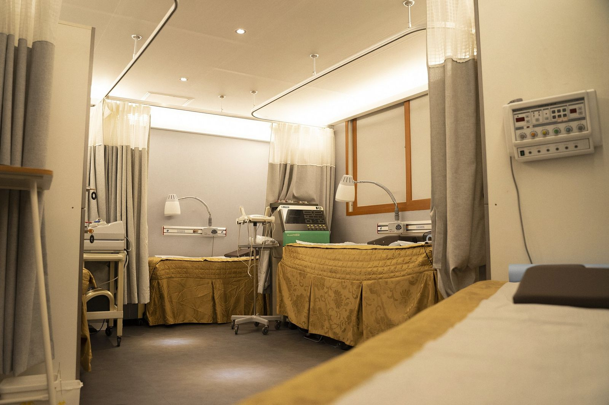

졸업과 취업을 앞둔 불안은 가슴 두근거림, 소화 불편, 얕은 잠처럼 몸으로 먼저 나타나기도 해, 불안이 심해지는 순간과 하루 생활, 잠을 먼저 묻고 혼자 버티지 않도록 할 수 있는 일을 함께 정리합니다.
여쭙는 것
- 불안이 가장 심해지는 때가 언제인가요? (결과 발표, 면접 전, 밤 등)
- 가슴 두근거림, 숨 막힘, 소화 불편 중 어떤 것이 함께 오나요?
- 잠드는 데 얼마나 걸리고, 자다가 깨나요?
생활에서 해 볼 것
- 하루 일정을 준비하는 시간과 쉬는 시간으로 나눠 적어 두기
- 잠들기 전 1시간은 채용 공고와 메신저 보지 않기
- 하루 한 번은 밖에 나가 20분 정도 걷기
한의원에서 함께 살필 것
- 불안 때문에 잠과 식사가 흔들리는 경우 몸의 긴장과 생활 리듬을 함께 살핍니다.
- 가슴 두근거림과 소화 불편이 함께 있는 경우 몸의 신호를 함께 살핍니다.
- 필요하다고 판단되면 정신건강의학과나 상담 기관을 함께 안내합니다.
먼저 확인이 필요한 신호
- 극단적인 생각이 들거나 스스로를 해치고 싶은 마음이 드는 경우(109·119에 바로…
- 가슴 통증과 숨참이 심하고 식은땀이 나는 경우(바로 119)
- 몇 주 넘게 거의 잠을 못 자고 일상생활이 어려운 경우

취업 준비로 불안해 가슴이 두근거리고 잠이 오지 않는다면, 하루를 준비하는 시간과 쉬는 시간으로 나누고 잠들기 전 1시간은 채용 공고와 메신저를 보지 않는 것부터 해 보시길 권합니다. 서류 결과를 기다리거나 면접을 앞두고 친구들과 비교하다 보면 마음이 조급해지고 몸이 먼저 신호를 보내기 쉽습니다.
왜 이런 불편이 생길 수 있나요
- 결과를 기다리는 불확실한 시간이 길어지면 몸이 계속 긴장한 상태로 지내게 됩니다.
- 긴장은 가슴 두근거림, 숨 막힘, 소화 불편처럼 몸의 신호로 먼저 나타나기도 합니다.
- 밤늦게까지 공고와 메신저를 확인하면 머리가 깨어 있어 잠들기 어렵습니다.
- 사람을 만나고 밖에 나가는 시간이 줄면 걱정이 더 커지기 쉽습니다.

먼저 이렇게 여쭙니다
- 불안이 가장 심해지는 때가 언제인가요? (결과 발표, 면접 전, 밤 등)
- 가슴 두근거림, 숨 막힘, 소화 불편 중 어떤 것이 함께 오나요?
- 잠드는 데 얼마나 걸리고, 자다가 깨나요?
- 하루 중 사람과 이야기하거나 밖에 나가는 시간이 있나요?
일상에서 먼저 해 볼 수 있는 것
- 하루 일정을 준비하는 시간과 쉬는 시간으로 나눠 적어 두기
- 잠들기 전 1시간은 채용 공고와 메신저 보지 않기
- 하루 한 번은 밖에 나가 20분 정도 걷기
- 불안한 생각이 많을 때 종이에 적어 두고 다음 날 다시 보기
한의원에서 함께 살필 수 있는 경우
- 불안 때문에 잠과 식사가 흔들리는 경우 몸의 긴장과 생활 리듬을 함께 살핍니다.
- 가슴 두근거림과 소화 불편이 함께 있는 경우 몸의 신호를 함께 살핍니다.
- 필요하다고 판단되면 정신건강의학과나 상담 기관을 함께 안내합니다.
좋은꿈참사랑한의원에서는 불안이 심해지는 순간과 하루 생활, 잠을 먼저 자세히 듣고, 진맥·설진·복진으로 몸의 긴장과 소화 상태를 살핍니다. 필요하다고 판단될 때 침이나 한약 상담, 생활 리듬 조정 등을 정하며, 불안이 깊으면 정신건강의학과나 상담 기관을 함께 안내합니다.
이렇게 기록해 오시면 상담이 쉬워집니다
- 불안이 심했던 날과 그 상황
- 두근거림이나 숨 막힘이 온 시간
- 잠든 시각과 밤에 깬 횟수
- 받고 있는 상담이나 드시는 약
이런 증상은 먼저 확인이 필요합니다
- 극단적인 생각이 들거나 스스로를 해치고 싶은 마음이 드는 경우(109·119에 바로 도움 요청)
- 가슴 통증과 숨참이 심하고 식은땀이 나는 경우(바로 119)
- 몇 주 넘게 거의 잠을 못 자고 일상생활이 어려운 경우
기분이 깊이 가라앉거나 극단적인 생각이 든다면 혼자 견디지 말고 자살예방 상담전화 109나 119, 가까운 정신건강의학과에 바로 도움을 요청하세요. 복용 중인 약은 처방한 의사와 상의 없이 줄이거나 끊지 않습니다.
한눈에 보는 표
| 구분 | 핵심 |
|---|---|
| 여쭙는 것 | 불안이 가장 심해지는 때가 언제인가요? (결과 발표, 면접 전, 밤 등) 가슴 두근거림, 숨 막힘, 소화 불편 중 어떤 것이 함께 오나요? |
| 생활에서 해 볼 것 | 하루 일정을 준비하는 시간과 쉬는 시간으로 나눠 적어 두기 잠들기 전 1시간은 채용 공고와 메신저 보지 않기 |
| 한의원에서 함께 살필 것 | 불안 때문에 잠과 식사가 흔들리는 경우 몸의 긴장과 생활 리듬을 함께 살핍니다. 가슴 두근거림과 소화 불편이 함께 있는 경우 몸의 신호를 함께 살핍니다. |
| 먼저 확인이 필요한 신호 | 극단적인 생각이 들거나 스스로를 해치고 싶은 마음이 드는 경우(109·119에 바로 도움 요청) 가슴 통증과 숨참이 심하고 식은땀이 나는 경우(바로 119) |
자주 묻는 질문
불안한 건 누구나 그런 거 아닌가요?
누구나 불안할 수 있지만, 잠과 식사, 일상이 흔들릴 정도라면 혼자 견디지 말고 이야기를 나누는 것이 좋습니다.
상담과 한의원 진료를 같이 받아도 되나요?
네, 받고 계신 상담이나 복용 중인 약을 알려 주시면 함께 고려해 살핍니다.
면접 날 아침 긴장을 줄이는 방법이 있나요?
평소 먹던 아침을 가볍게 먹고, 일찍 도착해 숨을 천천히 길게 내쉬는 시간을 가져 보세요. 들이쉬는 것보다 내쉬는 것을 길게 하면 마음을 가라앉히는 데 도움이 될 수 있습니다.
이 글은 일반적인 건강 정보이며 개인의 진단이나 치료를 대신하지 않습니다. 증상이 있거나 복용 중인 약이 있다면 진료를 통해 확인하세요. 치료 효과는 개인마다 다를 수 있습니다.
좋은꿈참사랑한의원은 재진 때 지난번 이야기부터 이어서 여쭙니다. 진료시간과 예약은 오시는 길에서 확인하세요.